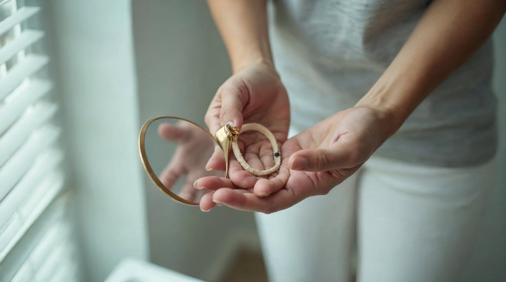
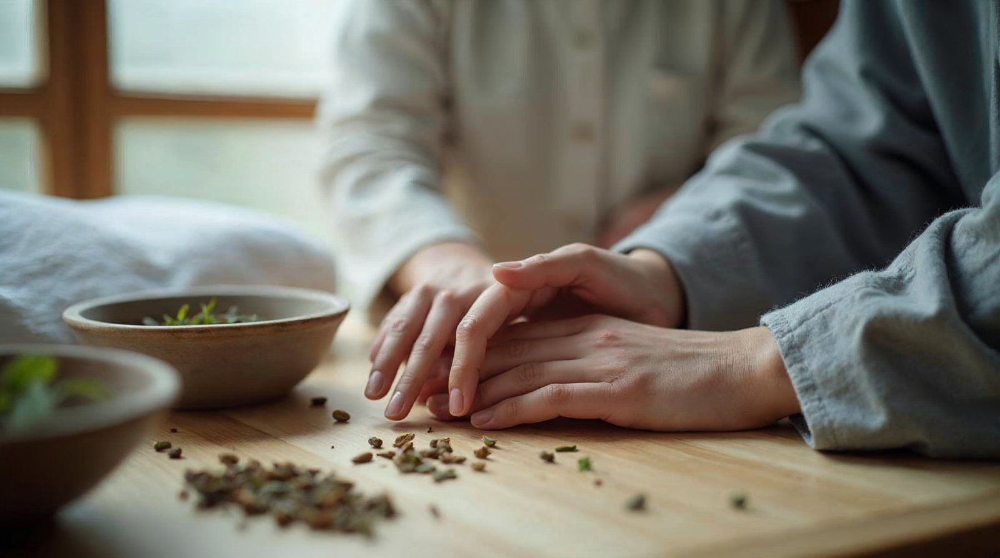
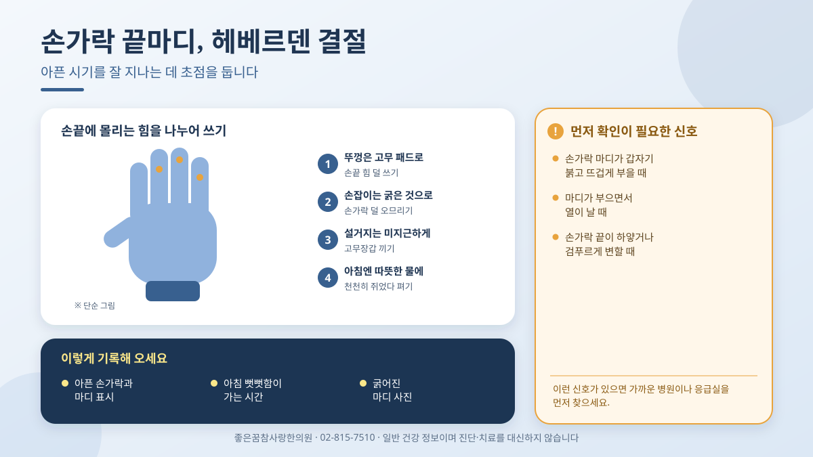

이종호 한의사 감수좋은꿈참사랑한의원 대표원장 (한의사 면허번호 19769)발행 2026-11-26 · 수정 2026-11-26
이 글의 차례
아침에 일어나 세수를 하려는데 손가락이 잘 굽혀지지 않습니다. 물을 받으며 손을 몇 번 쥐었다 폈다 하면 조금 풀리는데, 문득 보니 검지와 중지 끝마디가 예전보다 굵어져 있습니다. 반지도 언제부턴가 잘 들어가지 않습니다.
손가락 마디가 굵어지고 욱신거린다는 분들은 진료실에서 대개 조심스럽게 손을 내미십니다. "혹시 류마티스인가요?" 하고 걱정부터 하시는 분도 있고, "나이 들면 다 그렇다던데요" 하며 대수롭지 않게 넘기시는 분도 있습니다. 두 마음 모두 충분히 이해가 됩니다.
손가락 끝마디, 손톱 바로 아래 관절이 단단하게 튀어나오는 것을 헤베르덴 결절이라고 부릅니다. 손가락 가운데 마디에 생기면 부샤르 결절이라고 부르기도 합니다. 둘 다 손가락 관절의 연골이 닳으면서 생기는 퇴행성 관절염의 한 모습입니다.
오늘은 손가락 마디가 왜 굵어지는지, 다른 관절염과 어떻게 구분해 보는지, 매일 쓰는 손을 어떻게 아껴 쓰면 좋은지, 그리고 한의원에서는 무엇을 함께 살피는지 말씀드려 보겠습니다.
헤베르덴 결절은 어떤 상태인가요?
손가락 관절 끝에는 뼈와 뼈가 부드럽게 미끄러지도록 돕는 연골이 덮여 있습니다. 오랜 시간 손을 쓰면서 이 연골이 조금씩 얇아지면, 몸은 관절을 붙잡으려고 뼈 가장자리를 덧붙여 단단하게 만듭니다. 이렇게 덧자란 뼈가 겉에서 만져지는 것이 헤베르덴 결절입니다.
처음에는 끝마디가 붉게 붓고 욱신거리거나, 작은 물혹처럼 말랑한 것이 생기기도 합니다. 이 시기에는 손을 쓸 때 시큰하고 밤에도 쑤신다는 분이 많습니다. 시간이 지나면 붓기와 열감은 가라앉고, 대신 마디가 단단하게 굵어진 모양이 남습니다.
마디 모양이 변했다고 해서 손을 쓰지 못하게 되는 것은 아닙니다. 아픔이 심한 시기를 지나고 나면 모양은 남아도 일상에서 크게 불편하지 않게 지내시는 분도 많습니다. 그래서 아픈 시기를 어떻게 지나는지가 중요합니다.
왜 손가락 마디가 굵어질까요
손가락 관절염은 한 가지 이유로만 생기기보다 여러 조건이 겹쳐서 나타납니다. 진료실에서 이야기를 나누다 보면 아래와 같은 공통점이 자주 보입니다.
- 요리, 청소, 손빨래처럼 손끝에 힘을 주는 집안일을 오래 해 오신 경우
- 미용, 조리, 공예, 악기, 재봉처럼 손가락을 섬세하게 반복해서 쓰는 일을 하신 경우
- 어머니나 이모처럼 가족 가운데 손가락 마디가 굵어진 분이 계신 경우
- 폐경 전후로 손가락이 붓고 뻣뻣해지기 시작한 경우
- 찬물에 손을 자주 담그는 일을 하시는 경우
특히 여성분들에게서 더 흔하게 나타나고, 폐경 무렵 호르몬 변화와 함께 시작되는 경우가 많다고 알려져 있습니다. 가족 가운데 같은 모양의 손가락을 가진 분이 있다면 체질적으로 비슷한 경향을 물려받았을 가능성도 있습니다.
한의학에서는 오래 쓰인 관절에 기혈이 넉넉히 닿지 못하고, 찬 기운과 습한 기운이 머물러 관절이 굳는 모습으로 보기도 합니다. 그래서 손가락만이 아니라 손발의 온도, 붓기, 잠과 몸 전체의 회복력을 함께 살피려고 합니다.
류마티스 관절염과는 어떻게 다른가요?
손가락 마디가 아프면 가장 먼저 류마티스 관절염을 걱정하시는 분이 많습니다. 두 질환은 원인도 살펴보는 방향도 다르기 때문에, 처음에 구분해 보는 것이 중요합니다.
- 아픈 마디의 위치: 헤베르덴 결절은 주로 손톱 바로 아래 끝마디에 생깁니다. 류마티스 관절염은 손가락이 손바닥과 만나는 뿌리 마디와 손목에 잘 생깁니다.
- 아침 뻣뻣함: 퇴행성 관절염은 아침 뻣뻣함이 대개 30분 안에 풀립니다. 류마티스 관절염은 한 시간 넘게 이어지는 경우가 많습니다.
- 마디의 느낌: 헤베르덴 결절은 딱딱한 뼈처럼 만져지고, 류마티스 관절염은 말랑하게 부어오르는 경우가 많습니다.
- 몸 전체의 증상: 류마티스 관절염은 양쪽 같은 자리가 함께 붓고, 피로감이나 미열이 동반되기도 합니다.
손가락 마디가 붉게 붓고 뿌리 마디나 손목까지 아프거나, 아침 뻣뻣함이 오래간다면 류마티스내과에서 혈액 검사를 받아 보시길 권해 드립니다. 손톱 주변 피부에 건선이 있다면 건선 관절염도 함께 살펴야 합니다.
엄지 뿌리 쪽이 아프다면 또 다른 자리의 관절염일 수 있고, 손가락을 굽혔다 펼 때 딸깍 걸린다면 방아쇠수지처럼 힘줄 문제일 수 있습니다. 어느 마디가 어떻게 불편한지 정확히 짚는 것이 구분의 시작입니다.
폐경 무렵 손가락이 붓고 뻣뻣해졌다면
폐경을 앞뒤로 한 몇 해 동안 손가락이 부은 듯 뻣뻣하고, 반지가 갑자기 꽉 끼게 되었다는 분이 많습니다. 몸의 호르몬 흐름이 바뀌는 시기에는 관절과 힘줄도 그 변화를 함께 겪기 때문입니다.
이 시기에는 손가락만이 아니라 잠, 열감, 땀, 기분의 변화가 함께 오는 경우가 흔합니다. 잠을 설친 다음 날 손이 더 뻣뻣하다고 느끼시는 분도 있습니다. 그래서 진료실에서는 손가락 이야기와 함께 요즘의 잠과 몸의 열감도 꼭 여쭙습니다.
갱년기 증상으로 산부인과에서 받고 계신 진료나 약이 있다면 그대로 이어 가시고, 진료 때 알려 주세요. 손가락 관리와 함께 몸 전체의 리듬을 나란히 살피면 생활에서 챙길 것이 더 분명해집니다.

집에서 스스로 살펴보는 방법
밝은 곳에서 양손을 나란히 펴고 손등 쪽에서 손가락 마디를 하나씩 보세요. 끝마디 양옆으로 작은 혹처럼 튀어나온 것이 있는지, 손가락이 옆으로 휘어 있는지, 붉거나 따뜻한 마디가 있는지 확인합니다.
다음으로 주먹을 천천히 쥐어 보세요. 손가락 끝이 손바닥에 닿는지, 어느 마디에서 걸리는지 봅니다. 아침에 일어났을 때 뻣뻣함이 몇 분쯤 지나야 풀리는지도 며칠 동안 시간을 재 보시면 좋습니다.
굵어진 마디를 사진으로 찍어 두시는 것도 권합니다. 몇 달 뒤 같은 각도로 다시 찍어 비교하면, 붓기가 가라앉았는지 모양이 변했는지 훨씬 정확하게 볼 수 있습니다.
손가락 끝마디 옆에 말랑한 작은 물혹이 생겼다면 일부러 터뜨리거나 짜지 마세요. 진료 때 보여 주시면 함께 살펴봅니다.
먼저 이렇게 여쭙니다
처음 오시면 저는 대략 이런 순서로 여쭙니다. 미리 생각해 오시면 이야기가 훨씬 수월해집니다.
- 어느 손가락, 어느 마디가 가장 불편한가요?
- 마디가 굵어지거나 붓기 시작한 것은 언제쯤인가요?
- 아침에 손이 뻣뻣한 시간은 얼마나 가나요?
- 손을 많이 쓰는 일을 하시거나 해 오셨나요?
- 손가락 말고 무릎, 손목, 발가락처럼 다른 관절도 아픈가요?
- 가족 가운데 손가락 마디가 굵어진 분이 계신가요?
- 폐경 여부와 그 무렵 손의 변화가 있었나요?
혈액 검사나 엑스레이를 받아 보신 적이 있다면 결과지를 함께 가져와 주세요. 검사 결과는 다른 원인을 구분하는 데 큰 도움이 되고, 진료 방향을 정할 때도 참고가 됩니다.
일상에서 먼저 해 볼 수 있는 것
손가락 관절염에서 가장 중요한 것은 손을 아예 쓰지 않는 것이 아니라, 관절에 한꺼번에 몰리는 힘을 나누어 주는 것입니다.
- 병뚜껑, 김치통 뚜껑은 고무 패드나 병따개를 써서 손끝 힘을 덜 쓰기
- 칼, 숟가락, 펜은 손잡이가 굵은 것을 골라 손가락을 덜 오므리기
- 설거지와 손빨래는 미지근한 물로 하고 고무장갑 끼기
- 무거운 장바구니는 손가락으로 들지 말고 팔뚝이나 어깨에 걸기
- 아침에는 따뜻한 물에 손을 담그고 천천히 쥐었다 펴기
- 휴대폰은 한 손 엄지로만 쓰지 말고 거치대나 양손 쓰기
손가락 운동은 아프지 않은 범위에서 부드럽게 하는 것이 좋습니다. 손가락을 하나씩 엄지와 맞대어 동그라미 만들기, 손을 쫙 폈다가 천천히 주먹 쥐기를 하루 두세 번, 10번씩 해 보세요. 마디가 붉게 부어 있는 시기에는 운동보다 쉬게 하는 쪽이 먼저입니다.
손을 따뜻하게 지키는 것도 중요합니다. 찬바람이 부는 날은 장갑을 끼고, 찬물에 손을 오래 담가야 하는 일은 중간중간 손을 데워 가며 하세요. 손이 차고 뻣뻣한 날 아픔이 더 심하다고 말씀하시는 분이 많습니다.
손에 바르는 보습제를 챙기는 것도 작은 도움이 됩니다. 손을 자주 씻는 일이라면 피부가 갈라지지 않게 보습을 해 주시고, 자기 전 손을 따뜻한 물에 담갔다가 보습제를 바르고 가볍게 주물러 주시면 손이 한결 부드럽게 느껴집니다.
손을 쓰는 일을 계속해야 할 때
손을 써야 생계를 잇는 분들께 손을 쉬라는 말은 현실과 동떨어진 이야기일 수 있습니다. 그래서 일을 아예 멈추기보다 손가락에 실리는 힘을 나누는 방법을 함께 찾아봅니다.
미용이나 조리처럼 같은 동작을 반복하는 일이라면 한 시간에 한 번은 손을 털고 손가락을 쭉 펴 주세요. 가위나 칼처럼 손에 쥐는 도구는 손에 맞는 크기와 무게를 고르는 것만으로도 부담이 달라집니다.
악기나 공예처럼 섬세한 손 쓰기가 필요한 일은 연습 시간을 짧게 여러 번으로 나누는 편이 좋습니다. 아픈 마디가 쉴 틈을 주면서 일의 흐름도 이어 갈 수 있는 방법을 진료실에서 함께 고민해 보겠습니다.

한의원에서 함께 살필 수 있는 경우
- 손가락 끝마디가 붉게 붓고 욱신거리는 시기인 경우
- 아침마다 손이 뻣뻣해 일을 시작하기 어려운 경우
- 찬물에 손을 담그거나 추운 날 손가락이 더 쑤시는 경우
- 손을 많이 써야 하는 일을 이어 가야 하는 경우
- 손가락과 함께 손목, 어깨까지 뻐근함이 이어지는 경우
좋은꿈참사랑한의원에 오시면 먼저 류마티스 관절염처럼 다른 원인을 의심할 신호가 없는지부터 봅니다. 그다음 맥을 짚고, 손가락 마디를 하나씩 눌러 보며 아픈 자리와 붓기, 움직이는 범위를 확인합니다. 손의 온도와 몸의 냉함도 함께 봅니다.
진찰한 내용을 바탕으로 침, 약침, 온열 관리 가운데 지금 상태에 맞는 것을 고르고, 손을 쓰는 방법과 집에서 할 관리를 함께 정합니다. 몸이 차고 붓기가 잦다면 한약 상담을 드리기도 하는데, 드시는 약을 먼저 확인하고 신중하게 정합니다.
이미 정형외과나 류마티스내과에서 받고 계신 진료와 약이 있다면 그대로 이어 가시면 됩니다. 처방받은 약은 처방한 선생님과 상의 없이 멈추지 마세요. 임신 중이시라면 진료 전에 먼저 알려 주시고, 필요하면 산부인과와 상의하시도록 안내합니다.
이렇게 기록해 오시면 상담이 쉬워집니다
- 아픈 손가락과 마디(손 그림에 표시해도 좋습니다)
- 아침에 뻣뻣한 시간이 몇 분쯤 가는지
- 손을 많이 쓴 날과 아픔이 심했던 날
- 날씨가 춥거나 찬물을 많이 만진 날 표시
- 굵어진 마디 사진과 받으신 검사 결과지
이렇게 2주 정도 적어 오시면 손가락이 어떤 날 더 힘들어하는지, 생활에서 무엇부터 바꿔 볼지 함께 찾기가 훨씬 쉬워집니다.
기록이 꼼꼼하지 않아도 괜찮습니다. 한 줄씩이라도 이어서 적어 보시면, 손가락이 편했던 날과 힘들었던 날 사이의 차이가 조금씩 눈에 들어오기 시작합니다.
오래 함께 쓸 손을 위해
손가락 마디가 굵어지는 것은 그만큼 손이 오랫동안 많은 일을 해 왔다는 흔적이기도 합니다. 모양이 변한 마디를 보며 속상해하시기보다, 앞으로 그 손을 조금 더 아껴 쓰는 방법을 찾아가는 쪽에 마음을 두셨으면 합니다.
아픔이 심한 시기는 대개 영원히 이어지지 않습니다. 그 시기에 손을 조금 덜 쓰고 따뜻하게 지키며 필요한 진료를 함께 받으면, 굵어진 마디와도 한결 편안하게 지내실 수 있습니다. 손이 조금 편해지면 하루의 기분도 따라서 달라진다고 말씀하시는 분이 많습니다.
이번 주에는 병뚜껑을 열 때 고무 패드를 쓰는 습관 하나만 골라 보세요. 다음에 오시면 아침 뻣뻣함이 어떻게 변했는지 함께 확인해 보겠습니다.
이런 증상은 먼저 확인이 필요합니다
- 손가락 마디가 갑자기 붉고 뜨겁게 부어오르면서 열이 나는 경우
- 손가락 끝이 하얗거나 검푸르게 변하고 감각이 둔해지는 경우
이런 신호가 있으면 한의원보다 가까운 병원이나 응급실을 먼저 찾으세요.
함께 읽으면 좋은 글
- 요리나 공예처럼 손을 많이 쓰는 50대의 손가락 마디가 욱신거릴 때는 어떻게 살피나요?
- 류마티스 관절염으로 치료 중일 때 한의원에서는 무엇을 함께 살피나요?
- 손가락을 굽혔다 펼 때 딸깍 걸리는 방아쇠수지는 어떻게 살피나요?
- 한파가 오면 무릎과 손가락 관절이 시리고 뻣뻣한 것은 왜 그런가요?
- 근육이 아픈 것인지 관절이 아픈 것인지 어떻게 짚어서 말하나요?

여쭙는 것
- 어느 손가락, 어느 마디가 가장 불편한가요?
- 마디가 굵어지거나 붓기 시작한 것은 언제쯤인가요?
- 아침에 손이 뻣뻣한 시간은 얼마나 가나요?
생활에서 해 볼 것
- 병뚜껑, 김치통 뚜껑은 고무 패드나 병따개를 써서 손끝 힘을 덜 쓰기
- 칼, 숟가락, 펜은 손잡이가 굵은 것을 골라 손가락을 덜 오므리기
- 설거지와 손빨래는 미지근한 물로 하고 고무장갑 끼기
한의원에서 함께 살필 것
- 손가락 끝마디가 붉게 붓고 욱신거리는 시기인 경우
- 아침마다 손이 뻣뻣해 일을 시작하기 어려운 경우
- 찬물에 손을 담그거나 추운 날 손가락이 더 쑤시는 경우
먼저 확인이 필요한 신호
- 손가락 마디가 갑자기 붉고 뜨겁게 부어오르면서 열이 나는 경우
- 손가락 끝이 하얗거나 검푸르게 변하고 감각이 둔해지는 경우
한눈에 보는 표
| 구분 | 핵심 |
|---|---|
| 여쭙는 것 | 어느 손가락, 어느 마디가 가장 불편한가요? 마디가 굵어지거나 붓기 시작한 것은 언제쯤인가요? |
| 생활에서 해 볼 것 | 병뚜껑, 김치통 뚜껑은 고무 패드나 병따개를 써서 손끝 힘을 덜 쓰기 칼, 숟가락, 펜은 손잡이가 굵은 것을 골라 손가락을 덜 오므리기 |
| 한의원에서 함께 살필 것 | 손가락 끝마디가 붉게 붓고 욱신거리는 시기인 경우 아침마다 손이 뻣뻣해 일을 시작하기 어려운 경우 |
| 먼저 확인이 필요한 신호 | 손가락 마디가 갑자기 붉고 뜨겁게 부어오르면서 열이 나는 경우 손가락 끝이 하얗거나 검푸르게 변하고 감각이 둔해지는 경우 |
자주 묻는 질문
굵어진 손가락 마디는 다시 가늘어지나요?
덧자란 뼈로 단단해진 모양은 대개 그대로 남습니다. 다만 붉게 붓고 욱신거리는 시기가 지나면 아픔은 가라앉는 경우가 많아서, 그 시기를 잘 지나는 데 초점을 둡니다.
헤베르덴 결절이 있으면 류마티스 관절염으로 바뀌나요?
두 질환은 원인이 다른 별개의 관절염입니다. 다만 뿌리 마디나 손목이 함께 붓거나 아침 뻣뻣함이 오래간다면 류마티스내과에서 검사를 받아 보시길 권합니다.
손가락이 아픈데 운동을 해도 되나요?
붉게 붓고 열감이 있는 시기에는 쉬게 하는 것이 먼저입니다. 붓기가 가라앉은 뒤에는 아프지 않은 범위에서 부드럽게 쥐었다 펴는 운동을 권합니다.
찜질은 따뜻하게 하는 게 좋나요?
아침 뻣뻣함이나 오래된 뻐근함에는 따뜻한 물이 편하게 느껴지는 분이 많습니다. 마디가 갑자기 붉고 뜨겁게 부었다면 따뜻한 찜질은 미루세요.
손가락 마디에도 침을 놓나요?
진찰한 내용에 따라 손가락 주변과 손목, 팔처럼 손으로 이어지는 자리를 함께 살핍니다. 마디가 많이 부어 있을 때는 자극을 조절해서 진행합니다.
좋은꿈참사랑한의원은 재진 때 지난번 이야기부터 이어서 여쭙니다. 진료시간과 예약은 오시는 길에서 확인하세요.
어디서 상담받을 수 있나요?
좋은꿈참사랑한의원은 서울 동작구 만양로2길 2 신성빌딩 3층·5층(서울 동작구 상도동, 7호선 상도역 3번 출구 근처)에 있습니다. 한의사 3명(이종호 대표원장, 조영기 수석진료원장, 정원영 진료원장)이 진료합니다. 진료시간은 평일 09:30~20:00(점심 13:00~14:00), 토·일·공휴일 09:30~15:00이며, 방문 전 전화로 확인을 권합니다. 예약은 네이버 예약, 카카오톡 상담, 전화 02-815-7510로 받습니다.
이 글은 일반적인 건강 정보이며 개인의 진단이나 치료를 대신하지 않습니다. 증상이 있거나 복용 중인 약이 있다면 진료를 통해 확인하세요. 치료 효과는 개인마다 다를 수 있습니다.
작성 기준: 일반적으로 알려져 있는 건강 정보를 참고해 정리했습니다(대표원장 감수). 증상 기록은 1~2주 동안 하루 1회, 비슷한 시간에 적어 오시면 지난 상태와 비교하기 쉽습니다.